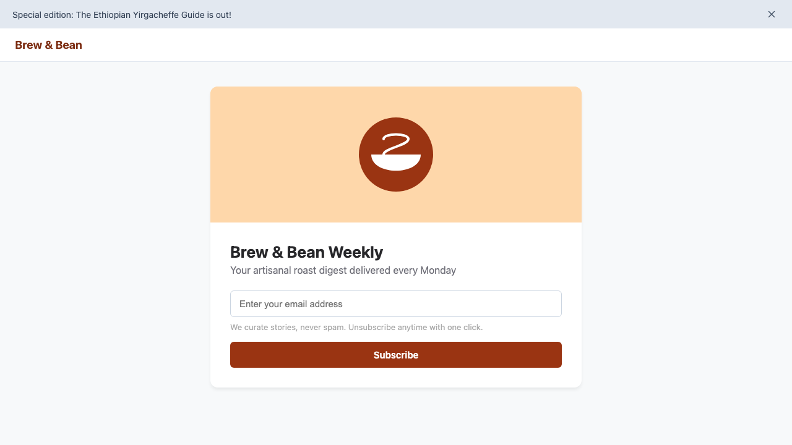

Meet a blind user trying to sign up.
To sighted visitors, this newsletter form looks clean, polished, and ready.
<div> without focus or keyboard access. A screen-reader user can never submit it.

Accessibility tools are stuck in the 1990s.
Web accessibility is no longer optional—it is a human right and an enforced legal requirement.
Autonomous Task-Driven Accessibility Repair.
“Paste a URL. An AI agent tries a real task with only a keyboard, gets stuck, we fix the code, it succeeds. You get proof.”
1. Blind Agent
Navigates using only keyboard events and accessibility tree snapshots—just like real assistive technology.
2. Semantic Fixer
Synthesizes real code fixes: contrast math, accessible buttons, labels, heading hierarchies, and landmark regions.
3. Closed-Loop Proof
Re-executes the agent on the patched working copy. Bounding-box layout checks ensure no visual regressions.
LIVE DEMO
Watch the Blind Agent get trapped, synthesize code repairs, and re-verify success.
Press T to start / pause the 3-minute pitch countdown
How AccessFix Works
A multi-agent, closed-loop pipeline from diagnostic scan to mathematical verification.
Impact, Honesty & What's Next
“Automation cannot catch everything. We fix common blocking issues and flag the rest for humans.” Rather than hallucinating false compliance, uncertain issues are routed directly to the Needs-A-Human triage queue.
GitHub Action / CI Bot
Gate pull requests on verified keyboard task completion instead of static scorecards.
Browser Extension
Client-side accessibility runtime polyfills broken web apps on the fly for disabled visitors.
Multi-Step Task Flows
Expand beyond single pages to complex checkout funnels, modals, and dynamic SPAs.